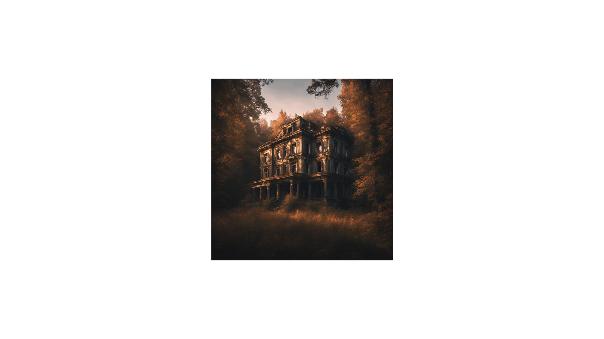

O Enigma da Mansão Abandonada
Você está parado em frente a uma mansão abandonada, escondida no meio da floresta. Há muito tempo, as pessoas falam de mistérios e acontecimentos estranhos que cercam esse lugar. O sol está se pondo, e uma brisa fria percorre as árvores. De repente, você sente um impulso de entrar. Algo o chama. O que você faz?
Você decide entrar. A porta range ao ser aberta, e o ar lá dentro é pesado, como se o tempo tivesse parado. Você caminha por um corredor mal iluminado até chegar a um grande salão. No centro, há uma escada que leva ao andar de cima. Ao redor, há quatro portas. Uma delas está entreaberta, como se esperasse por você.
Você decide que essa aventura não é para você. Caminha de volta pela floresta enquanto o sol se põe completamente. Ao chegar em casa, sente um arrepio. Durante a noite, um som estranho o acorda. Parece vir de fora. Você se levanta para investigar e vê uma sombra estranha à distância.
As escadas rangem sob seus pés à medida que você sobe. No topo, há um longo corredor com uma única porta ao final. Quando você se aproxima, sente uma presença estranha atrás de você. Você se vira rapidamente, mas não há nada. Seu coração dispara..

Você empurra a porta e entra em uma sala escura. As paredes estão cobertas de espelhos empoeirados. No centro, há uma pequena mesa com uma caixa de madeira antiga. Você sente uma energia estranha emanando dela.
Você decide explorar as outras portas. A primeira leva a uma antiga biblioteca, a segunda a um salão de festas empoeirado, e a terceira parece ser um antigo quarto, abandonado há muito tempo. Em qual você quer entrar?
Você decide ignorar o som e volta a dormir. No entanto, seus sonhos são perturbados por visões da mansão e de uma figura sombria observando você. Ao acordar, sente que perdeu algo importante, algo que nunca saberá o que era. FIM.
Você sai de casa para investigar o som. Ao se aproximar da sombra, percebe que é uma figura alta, encapuzada. Antes que possa reagir, ela sussurra algo ininteligível, e tudo fica escuro. Você desapareceu, e nunca mais foi visto. FIM.
Você abre a porta e encontra uma sala pequena e vazia, exceto por um espelho antigo no centro. Ao se aproximar, o espelho reflete não o seu rosto, mas o de uma pessoa que você nunca viu. De repente, a figura no espelho sorri, e você sente uma força puxando você para dentro. FIM.
Ao descer, você sente uma presença ainda mais forte. Algo está definitivamente observando você. De repente, as portas da mansão se fecham sozinhas, e as janelas começam a bater. Preso e sem saída, você percebe que cometeu um erro ao entrar aqui. FIM.
Ao abrir a caixa, você encontra um antigo colar com um pingente brilhante. Quando o toca, sente uma onda de poder percorrer seu corpo. Agora, você se tornou o guardião da mansão, condenado a vagar por ela para sempre. FIM.
Você sai da sala e decide explorar outras partes da mansão, mas o som de algo se movendo no andar de cima chama sua atenção. Quando olha para as escadas, vê uma sombra descendo lentamente em sua direção. Assustado, você tenta fugir, mas as portas se trancam. FIM.
Você entra na biblioteca e vê pilhas de livros antigos. Um livro, em particular, parece brilhar com uma luz estranha. Quando você o abre, sente como se o tempo parasse. As páginas começam a girar sozinhas, e uma voz sussurra em seu ouvido: "Bem-vindo ao seu novo lar." FIM.
Você entra na biblioteca e vê pilhas de livros antigos. Um livro, em particular, parece brilhar com uma luz estranha. Quando você o abre, sente como se o tempo parasse. As páginas começam a girar sozinhas, e uma voz sussurra em seu ouvido: "Bem-vindo ao seu novo lar." FIM.
No salão de festas, você encontra um velho piano coberto de poeira. Ao tocar uma tecla, a mansão começa a vibrar, como se estivesse viva. A música preenche o ambiente, e, aos poucos, figuras sombrias surgem dançando ao som da melodia. Você se une a elas, dançando para sempre no salão. FIM.
Você entra no quarto e vê uma cama antiga e uma penteadeira com um espelho quebrado. No canto, há uma boneca de porcelana com olhos frios. Quando você se aproxima da boneca, ela move a cabeça e sussurra: "Você não deveria estar aqui." De repente, a porta se fecha, e a escuridão toma conta. FIM.